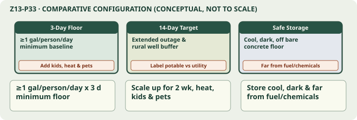

Z13-P33 · Home survival and utilities · New manuscript
Size household emergency drinking-water reserves beyond the 3-day floor
Plan realistic household drinking, cooking, and hygiene water quantities for both short disruptions and extended multi-week outages.
When it applies · Homes, apartments, and rural residences building baseline and extended emergency water reserves.
Equipment · Sealed commercial water cases or sanitized food-grade storage containers, permanent marker, and cool dark storage area.

Actions
- Treat CDC/FEMA's 1 gallon per person per day for at least 3 days as a MINIMUM short-term floor—building toward a 2-week reserve where storage space allows, and scaling higher for summer heat, pregnant/nursing individuals, illness, infant formula, and pets.[W14, U08]
- Account separately for drinking/cooking potable water versus non-potable utility water (toilet flushing, cleaning) so contaminated utility jugs can NEVER be confused with drinking supplies.[W06, U08, W29]
- Store water in a cool (50–70°F), dark place out of direct sunlight and away from gasoline, pesticides and other toxic substances.[W35, W14]
Failure recognition · Storing three one-gallon jugs next to a lawnmower gas can for a family of five and calling household water preparedness complete.[W14, W06]
Verify · Confirm total stored gallons meet household headcount + pets for target days, labels separate potable/utility, and storage is cool and chemical-free.[W14, W06, U08]
Stop or change course · Any leaking, cracked, chemical-odor, or sunlight-algae-fouled storage container must be discarded or treated strictly as non-potable.[W06, W01]
Evidence and editorial notes
- U08 · FEMA / Ready.gov · Water Storage and Emergency Supply (current web edition)
- Section: Water > Emergency Household Supply, Shutoff, and Alternate Indoor Sources · Conditions: Household plumbing disruptions, water-main breaks, or winter freeze outages
Support: Store at least 1 gallon per person per day for several days (two weeks where feasible for extended outages), know the main water shutoff valve location, and recognize clean indoor water-heater reserve boundaries only after shutting off power/gas and confirming supply safety.
Limitations: Never use water from radiators, hot-water boilers, or chemically treated toilet tanks for drinking. · Conflicting evidence: None; complements CDC-S (W06, W14).
Editorial note: Covers household water shutoffs, pipe-freeze prevention, and safe indoor reserves. · Specialist reviewer: Plumbing safety and drinking-water public health
Primary source · checked 2026-11-24 - W01 · CDC · How to Make Water Safe in an Emergency (2024-09-19)
- Section: Water with fuel or toxic chemicals in it · Conditions: Suspected fuel, toxic chemicals or radioactive contamination
Support: Use a different safe supply. Standard boiling and microbial disinfection do not make this water safe.
Limitations: Does not list contaminant-specific lab remediation; applies to emergency consumer decisions only. · Conflicting evidence: None across CDC/EPA emergency guidance.
Editorial note: Used as upstream hard-stop gate prior to any field treatment card. · Specialist reviewer: Drinking-water safety and public health
Primary source · checked 2026-11-24 - W06 · CDC · How to Create an Emergency Water Supply (current web edition)
- Section: How to store emergency water; Safe storage containers · Conditions: Potable water intended for emergency storage
Support: Prefer sealed commercial water or clean food-grade tight-closing containers. Avoid containers that held toxic chemicals.
Limitations: Container shelf durability and rotation depend on plastic/material type and storage heat. · Conflicting evidence: None; reinforces strict raw-vs-clean segregation.
Editorial note: Used to enforce labeling and dedicated raw/potable vessel separation. · Specialist reviewer: Drinking-water safety and public health
Primary source · checked 2026-11-24 - W14 · CDC · How to Create an Emergency Water Supply (current web edition)
- Section: How Much Water to Store; Rotation · Conditions: Household emergency water reserve planning
Support: Plan at least 1 gallon per person per day for at least 3 days (more for heat, illness, pregnancy, or pets); rotate self-filled water every 6 months.
Limitations: Backcountry active travel demands vary sharply by exertion, temperature, and humidity. · Conflicting evidence: None; household baseline is cited only as a planning floor, not a physiological maximum.
Editorial note: Distinguishes household storage floors from active field hydration demands. · Specialist reviewer: Household preparedness and drinking-water safety
Primary source · checked 2026-11-24
Current assessment · W2C-E049 (2026-11-28) · Open: a statement on this card is not supported by this source: CDC (W14, W35) says to keep containers cool (50 to 70 F), out of direct sunlight and away from toxic substances; it says nothing about concrete floors or vapour permeation. Both clauses were removed and the cards cite W35. Limits: None. - W29 · CDC · How to Make Water Safe in an Emergency (2024-09-19)
- Section: Use safe water for drinking, brushing teeth and food preparation · Conditions: Applicable emergency-water advice and permissible uses under active local advisory
Support: Use confirmed safe water for oral and food-contact tasks. Follow current local instructions for each use.
Limitations: Infant formula requires separate P26 conditions. Wound care requires the appropriate care source. · Conflicting evidence: See A02 claim audit for boundaries.
Editorial note: Separates potable-required tasks from non-potable utility uses. · Specialist reviewer: Public health and wilderness medicine
Primary source · checked 2026-11-24
Current assessment · A04-W29 (2026-11-25) · Bounded support newly confirmed (A04): Confirms safe water for oral and food-contact uses and the local-advisory boundary. Limits: Specialist review PENDING (Public health and wilderness medicine); publication HOLD. All release decisions pending. - W35 · CDC · How to Create an Emergency Water Supply (current web edition)
- Section: Cleaning and sanitizing a water storage container; labelling and storage · Conditions: Reusable container before filling with emergency drinking water
Support: Wash the container with soap and rinse completely with water. Make a sanitizing solution of 1 teaspoon unscented 5% to 9% bleach in 1 quart of water, cap and shake so it touches all inside surfaces, wait at least 30 seconds, pour it out and let the empty container air-dry before use. Label it drinking water with the storage date and replace the water every six months. Never use containers that held toxic chemicals.
Limitations: Page dated 2025-06-27. No rinse step follows sanitizing. · Conflicting evidence: Corrects W13, which adds a post-sanitizing rinse (W2C-E045).
Editorial note: Added in W2C-B07. · Specialist reviewer: Drinking-water utility and public health
Primary source · checked 2026-11-24
Current assessment · W2C-E044-W35 (2026-11-28) · Bounded primary support recorded: Ground the W2C-B07 water-treatment plates. Limits: Product labels govern tablets, filters and UV devices.
Source lineage · CDC Emergency Water Supply and FEMA Ready.gov Water; new manuscript · Classification · New manuscript.